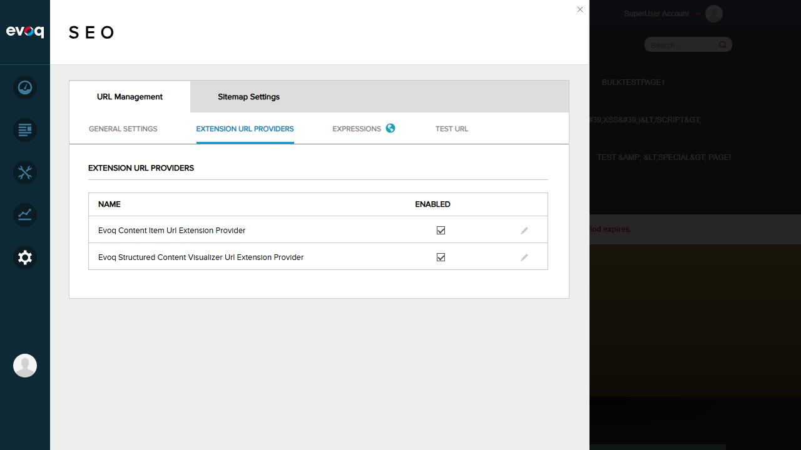
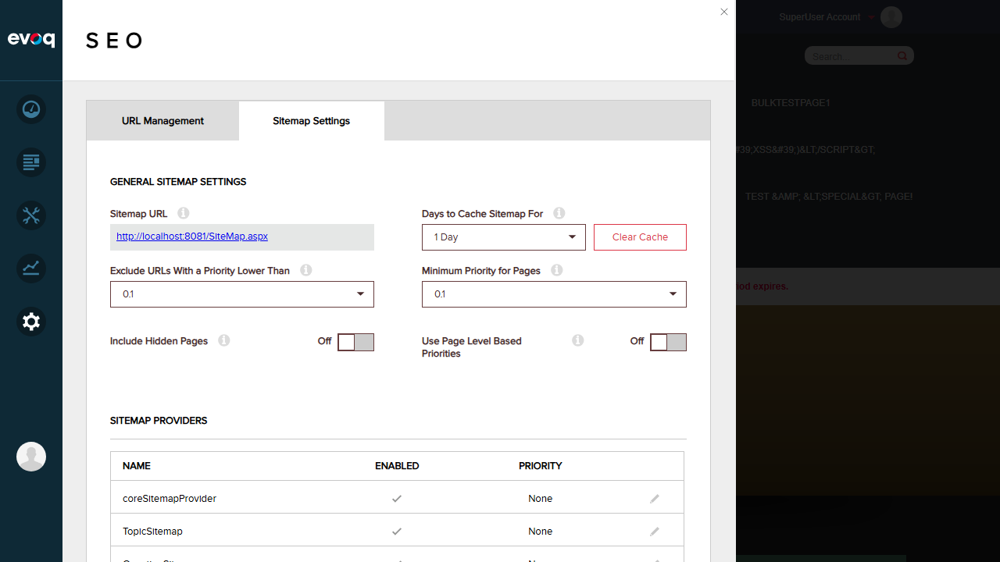

URL Management UI Navigation - Test Report
Feature Information
| Feature Name |
URL Management UI Navigation |
| Description |
Basic UI structure and navigation for URL management module |
| Extension |
Evoq.PersonaBar.UrlManagement (PersonaBar Module) |
| Priority |
Low (Smoke Testing) |
| UI Location |
Admin > Persona Bar > Settings > SEO > URL Management |
| Test Date |
January 6, 2026 |
Test Scenarios
Test 1: Load URL Management Module
PASS
Steps Taken:
- Logged in as SuperUser (host)
- Clicked Settings icon in Persona Bar
- Selected "S E O" from the Settings menu
- URL Management tab was displayed by default
Expected Result: URL Management module loads and displays configuration options
Actual Result: Module loaded successfully showing GENERAL SETTINGS tab with URL Rewriter and URL Redirects sections

Test 2: Navigation to Extension URL Providers Tab
PASS
Steps Taken:
- From URL Management module, clicked "EXTENSION URL PROVIDERS" tab
- Verified the tab content loaded correctly
Expected Result: Extension URL Providers tab displays list of URL providers
Actual Result: Tab displayed successfully with two URL providers listed:
- Evoq Content Item Url Extension Provider (Enabled)
- Evoq Structured Content Visualizer Url Extension Provider (Enabled)

Test 3: Navigation to Test URL Tab
PASS
Steps Taken:
- From URL Management module, clicked "TEST URL" tab
- Verified the tab content loaded correctly
Expected Result: Test URL tab displays URL testing functionality
Actual Result: Tab displayed successfully with two sections:
- TEST A PAGE URL - with Page to Test dropdown, query string option, and Test URL button
- TEST URL REWRITING - with URL to Test input and rewriting result fields

Test 4: Navigation to Sitemap Settings Tab
PASS
Steps Taken:
- From SEO page, clicked "Sitemap Settings" main tab
- Verified the tab content loaded correctly
Expected Result: Sitemap Settings tab displays sitemap configuration options
Actual Result: Tab displayed successfully with:
- GENERAL SITEMAP SETTINGS - Sitemap URL, cache settings, priority settings
- SITEMAP PROVIDERS - List of sitemap providers (coreSitemapProvider, TopicSitemap, etc.)
- SITE SUBMISSION - Search engine submission options

Test Summary
| Total Tests |
4 |
| Passed |
4 |
| Failed |
0 |
| Pass Rate |
100% |
Observations
- Code vs UI Discrepancy: The code files specified in the test requirements (urlmanagement.html and urlmanagement.js) contain placeholder/stub code ("Hello World, This is Url Management" and basic alert functions). However, the actual URL Management UI in the SEO settings is a fully functional, production-ready interface. This suggests the referenced code files are either development stubs or the actual module implementation resides in different files within the DNN/Evoq framework.
- Module Location: URL Management is found under Settings > SEO (not directly under "Site Behavior" as indicated in the task). The path is: Persona Bar > Settings > SEO > URL Management.
- UI Responsiveness: All tabs and controls loaded quickly without any noticeable delay or rendering issues.
- EXPRESSIONS Tab: The EXPRESSIONS tab shows a small icon/badge next to it, which may indicate special functionality or additional features. This was not explicitly tested but navigation to this tab is available.